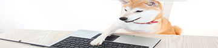
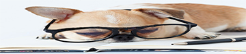
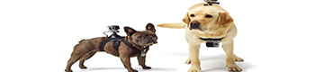

<!--
  Generated template for the DogsPage page.

  See http://ionicframework.com/docs/components/#navigation for more info on
  Ionic pages and navigation.
-->
<ion-header>

    <ion-navbar color="A700">
        <ion-icon style="font-size: 30px;" name="paw" color="light">สุนัข</ion-icon>
        <ion-title> </ion-title>
       
    
      </ion-navbar>

</ion-header>


<ion-content >
    <!-- 
    <ion-card>
       
      <div class="card-title">เรียนรู้</div>
    </ion-card>
    <ion-card>
        
         <div class="card-title">ฉุกเฉิน</div>
       </ion-card>
       <ion-card>
          
          <div class="card-title">เพิ่มสัตว์เลี้ยง</div>
        </ion-card>
         <ion-card>
            
             <div class="card-title">วีดีโอ</div>
          </ion-card>
           -->
</ion-content>
